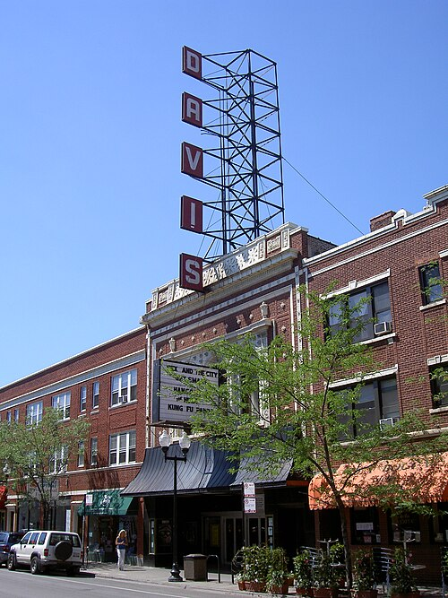
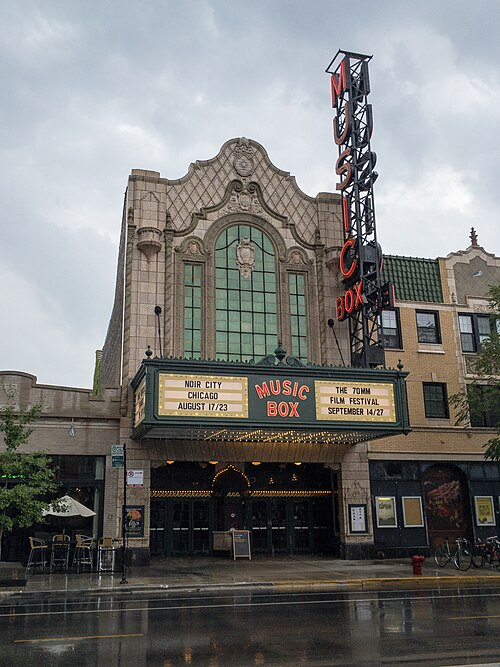
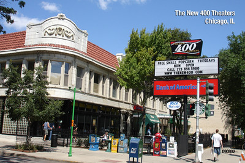

<!DOCTYPE html>
<html>
    <head>
        <title>Lab 2</title>

         <link rel="stylesheet" href="https://unpkg.com/leaflet@1.9.4/dist/leaflet.css"
           integrity="sha256-p4NxAoJBhIIN+hmNHrzRCf9tD/miZyoHS5obTRR9BMY="
           crossorigin=""/>

         <script src="https://unpkg.com/leaflet@1.9.4/dist/leaflet.js"
           integrity="sha256-20nQCchB9co0qIjJZRGuk2/Z9VM+kNiyxNV1lvTlZBo="
           crossorigin=""></script>

    </head>

    <body>
        <div id="map" style="height: 500px"></div>

        <script type="text/javascript">

          var map = L.map('map', {
              center: [41.97296, -87.65305],
              zoom: 12
          });

    L.tileLayer('https://server.arcgisonline.com/ArcGIS/rest/services/Canvas/World_Light_Gray_Base/MapServer/tile/{z}/{y}/{x}', {
               attribution: 'Tiles &copy; <a href="https://www.esri.com/">Esri</a>',
               maxZoom: 16,
               minZoom: 10
            }).addTo(map);
			
			var cinemaIcon = L.icon({
				iconUrl: 'cinema.png', // url that links to the icon image file, saved in the same folder as the current page 
				iconSize:     [38, 38], // size of the icon image in pixels
				iconAnchor:   [19, 19], // the top left corner of the icon will be aligned so that this point is at the marker's geographical location
				popupAnchor:  [0, -10] // point from which the popup should open, relative to the iconAnchor 
				});
			
          var marker1 = L.marker([41.965442, -87.686943], {icon: cinemaIcon, alt: 'The Davis Theater'}).addTo(map);
		  
  
		  var marker2 = L.marker([41.949696, -87.663624], {icon: cinemaIcon, alt: 'The Music Box Theater'}).addTo(map);
		  
		  var marker3 = L.marker([42.004770, -87.661393], {icon: cinemaIcon, alt: 'The New 400 Theater'}).addTo(map);
		  
		 
var pic1 = '';
var pic2 = '';
var pic3 = '';

marker1.bindPopup('<p style="color:red; font-weight:bold"> The Davis Theater in Lincoln Square </p>' + pic1);
marker2.bindPopup('<p style="color:red; font-weight:bold"> The Music Box Theater in Lakeview</p>' + pic2);
marker3.bindPopup('<p style="color:red; font-weight:bold"> The New 400 in Rogers Park</p>' + pic3);

        </script>
   </body>
</html>
